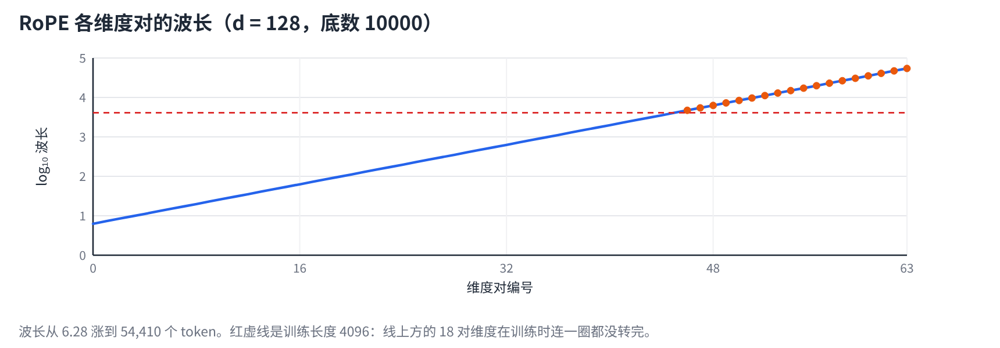
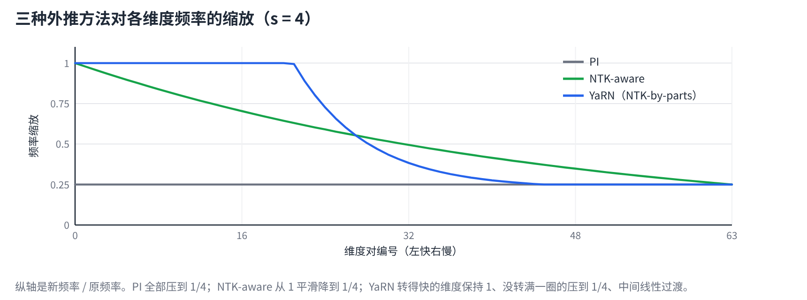
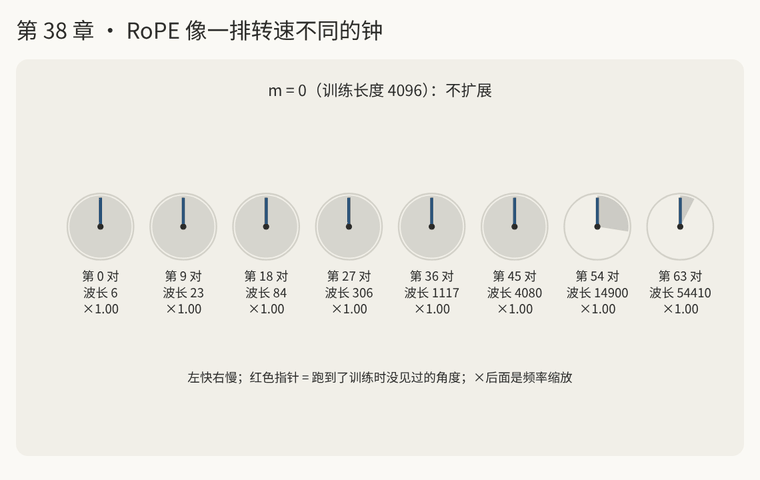

第 38 章 · 位置编码的数学：正弦编码、RoPE、长度外推（PI、NTK、YaRN）、ALiBi
本地运行
git clone https://github.com/wikieden/math-and-eval-stats
cd math-and-eval-stats/code/notebooks
pip install jupyterlab torch numpy
jupyter lab ch38_position_encoding.ipynb也可以下载后直接用 VS Code 打开 .ipynb 运行。需要 GPU 的章节在 Colab 里选「代码执行程序 → 更改运行时类型 → GPU」。
本章回答：注意力本身不知道顺序，位置信息是怎么加进去的？正弦编码为什么能表示相对位置？RoPE 为什么是"旋转"？训练 4K 的模型想用到 16K，位置插值、NTK、YaRN 各改了什么？ALiBi 为什么不需要位置向量？
讲解日期：2026-11-25 · 上一章：第 37 章 注意力的数学 · 下一章：第 39 章 归一化与信号传播
对应原文：RoFormertransformer-deep-dive/materials/text/papers/rope-roformer-2104.09864.txt（§3.2 旋转位置编码式 (12)–(16)，二维情形到一般形式）；YaRNtransformer-deep-dive/materials/text/papers/yarn-2309.00071.txt（NTK-aware 换底数 L196–L201；NTK-by-parts 的比值 r 与斜坡函数 L250–L283，α = 1、β = 32 L283；温度 √(1/t) = 0.1 ln s + 1，式 (15) L310–L321）；ALiBitransformer-deep-dive/materials/text/papers/alibi-2108.12409.txt（斜率的几何序列 L331–L335）；位置插值transformer-deep-dive/materials/text/papers/position-interpolation-2306.15595.txt
本章缩写：PE = Positional Encoding（位置编码）；RoPE = Rotary Position Embedding（旋转位置嵌入）；PI = Position Interpolation（位置插值）；NTK = Neural Tangent Kernel（神经正切核，这里指“NTK-aware”换底数的方法）；YaRN = Yet another RoPE extensioN（又一个 RoPE 扩展方法）；ALiBi = Attention with Linear Biases（带线性偏置的注意力）；θ_i = 第 i 对维度的角频率；λ = 波长；s = 扩展倍数。全部缩写见 附录 · 缩写与术语表
讲解
第一步：正弦编码：平移是一个只依赖距离的旋转（2026-11-25）
类比：一组转速不同的钟表。 秒针转得快，分辨相邻时刻；时针转得慢，分辨远距离。看所有指针的位置就知道是几点几分几秒。
原版 Transformer 的第 i 对维度：\((\sin p\omega_i, \cos p\omega_i)\)，\(\omega_i = 10000^{-2i/d}\)。三角和角公式说明：
例子（d = 16 的第 3 对，p = 10、k = 7）：PE(17) = [0.5121, 0.8589]，R(7ω)·PE(10) = [0.5121, 0.8589]。
所以"往后挪 k 格"是一个固定的线性变换，模型有可能学会用它表达相对位置。但正弦编码是加到词向量上的，进入 q·k 以后位置和内容混在一起，相对位置性质并不精确保留。
一句话：正弦编码的平移 = 只依赖距离的旋转，但加在输入上，进到点积后相对性不精确。
第二步：RoPE：直接旋转 q 和 k（2026-11-25）
RoPE（RoFormer §3.2）不加，而是把 q、k 的每对维度看成一个复数，按位置 m 乘 \(e^{im\theta_i}\)（旋转 mθ_i）：
点积只依赖 m − n：绝对位置在乘积里被约掉了。不加参数、不改 V，每层注意力都直接带上相对位置。
例子（d = 128、底数 10000，θ_i = 10000^{−2i/d}）：
| 维度对 | 每个 token 转的角度 | 波长 2π/θ |
|---|---|---|
| 第 0 对（最快） | 1 弧度 | 6.28 个 token |
| 第 63 对（最慢） | 1.15 × 10⁻⁴ 弧度 | 54,410 个 token |
64 对里有 18 对的波长超过训练长度 4096：这些维度在训练时连一圈都没转完，模型只见过它们的一小段角度。外推到更长时，问题就出在这几对上（下一步）。

图 38-1 · 横轴维度对编号 0–63，纵轴波长（对数）；红虚线是训练长度 4096，线上方的 18 对在训练时没转满一圈一句话：RoPE 把每对维度按位置旋转，点积里绝对位置约掉、只剩 m − n；慢维度的波长可能超过训练长度。
第三步：长度外推：PI、NTK-aware、YaRN（2026-11-25）
训练 4096、想用到 16384（s = 4）。直接用：慢维度转到从没见过的角度，注意力乱掉。三种改法：
| 方法 | 怎么改 | 代价 |
|---|---|---|
| 位置插值 PI | 所有频率除以 s（位置 m → m/s） | 快维度也被压缩，相邻 token 的角度差变成 1/4，局部分辨率下降 |
| NTK-aware | 底数换成 base·s^{d/(d−2)}（YaRN L196–L201） | 高频几乎不动、低频压缩 s 倍；但中间的维度会外推一点，最优底数要试 |
| YaRN（NTK-by-parts + 温度） | 按每对维度在训练长度里转的圈数 r = L/λ 分三段：r > β 不动、r < α 完全插值、中间线性过渡（L250–L283）；再把注意力 logits 乘 (0.1 ln s + 1)²（式 (15)） | 要选 α、β（Llama 用 α = 1、β = 32） |
例子（d = 128、s = 4）：
- NTK-aware：底数 10000 → 40,890；最高频 1.0000 → 1.0000，最低频正好缩小 4 倍；
- YaRN：64 对里 21 对不插值（转得快，局部关系不能动）、25 对过渡、18 对完全插值（正好是第二步那 18 对没转满一圈的）；温度 √(1/t) = 0.1 ln 4 + 1 = 1.1386。

图 38-2 · 横轴维度对编号，纵轴“新频率 / 原频率”：PI 是一条 1/4 的水平线；NTK-aware 从 1 平滑降到 1/4；YaRN 前段保持 1、末段 1/4、中间线性过渡一句话：PI 一刀切压缩所有频率；NTK-aware 换底数让高频不动、低频压缩；YaRN 按转的圈数分段处理，再加一个注意力温度。
第四步：ALiBi：不加位置向量，直接在分数上减距离（2026-11-25）
ALiBi：注意力分数加一个和距离成正比的惩罚，\(s_{ij} \leftarrow s_{ij} - m_h\cdot(i - j)\)，每个头的斜率不同（ALiBi L331–L335：8 个头取 2^{−1}, 2^{−2}, …, 2^{−8}）。
例子（距离 100 时各头的偏置）：
| 头 | 1 | 2 | 3 | 4 | 5 | 6 | 7 | 8 |
|---|---|---|---|---|---|---|---|---|
| 斜率 | 1/2 | 1/4 | 1/8 | 1/16 | 1/32 | 1/64 | 1/128 | 1/256 |
| 偏置 | −50 | −25 | −12.5 | −6.25 | −3.12 | −1.56 | −0.78 | −0.39 |
斜率大的头几乎只看最近几个 token，斜率小的头能看很远：一组"不同视野"的头。偏置对任何长度都有定义，所以外推比较平稳；代价是它强加了"越远越不重要"的先验。
场景代码：Hugging Face 里给 RoPE 模型开 YaRN（真实配置项；本书环境没装 transformers，没跑过）：
config.rope_scaling = {"rope_type": "yarn", "factor": 4.0,
"original_max_position_embeddings": 4096} # β、α 用默认 32、1
model = AutoModelForCausalLM.from_pretrained(name, config=config)
一句话：ALiBi 用每头不同斜率的线性距离惩罚代替位置向量，天然能外推，但带着“越远越不重要”的偏置。
动画演示：钟表一样的 RoPE

可交互版：animations/38-position-encoding.html（滑块调位置 m 和扩展方法）。
怎么看：
- 一排 8 个“钟面”代表 8 对维度（从快到慢），指针角度是 m·θ_i；m 增大时左边的钟转得飞快，右边的几乎不动（第二步）；
- 灰色扇形是训练时见过的角度范围（m 从 0 到 4096）；m 超过 4096 时，右边慢钟的指针跑出扇形（第二步）；
- 切换 PI / NTK / YaRN：看哪些钟被放慢了、慢了多少（第三步）。
练习与作答记录
题 1（第一步）：正弦编码 ω = 0.1，位置 p = 3 的编码是 (sin 0.3, cos 0.3)。写出把它变成位置 p = 8 的旋转矩阵。
作答：（待作答）
题 2（第二步）：d = 64、底数 10000 的 RoPE，最慢一对的波长大约是多少？训练长度 2048 时，有多少对的波长超过它？
作答：（待作答）
题 3（第四步）：16 个头的 ALiBi，按论文的几何序列，第 1 个和最后一个头的斜率各是多少？
作答：（待作答）
口诀
正弦编码是钟表，平移是旋转但加在输入上；
RoPE 直接转 q 和 k，点积只剩 m 减 n；
慢钟没转满一圈，外推就出事；
PI 全压缩，NTK 换底数，YaRN 分三段加温度；
ALiBi 按距离减分，斜率成几何序列。
本章复习卡片
ST127（正弦编码的旋转性质；RoPE 为什么只依赖相对位置）、ST128（PI、NTK-aware、YaRN 各改什么）、ST129（ALiBi 的斜率与偏置）。练习做完后，按答错、卡住的地方补上。
附录 · 延伸阅读
留给以后深入学习用，不影响本章主线。★ 是建议先读的。
推荐阅读
| 读什么 | 读哪里 | 读它为了什么 |
|---|---|---|
| ★ RoFormer（Su 2021） | §3.2–3.4 | RoPE 的推导和长期衰减性质 |
| ★ YaRN（Peng 2023） | §3.1–3.3（L196–L321） | NTK-aware、NTK-by-parts、温度 |
| ★ 《从零读懂 Transformer》第 14 章 位置编码、第 16 章 多个时钟 | 全章 | 正弦编码的直觉和动画 |
| Position Interpolation（Chen 2023） | §2 | PI 的动机与插值误差界 |
| ALiBi（Press 2021） | §3（L331 起） | 斜率的选法 |
数学原理
- 和角公式：sin(a + b) = sin a cos b + cos a sin b，cos(a + b) = cos a cos b − sin a sin b ⇒ 平移是旋转。
- 复数乘法 = 旋转：(x + iy)e^{iφ} 把向量转 φ；\(z_1e^{i\alpha}\overline{z_2e^{i\beta}} = z_1\bar z_2e^{i(\alpha - \beta)}\)。
- NTK-aware 的底数：要让最低频（i = d/2 − 1）缩小 s 倍：\((b')^{-(d-2)/d} = b^{-(d-2)/d}/s\) ⇒ \(b' = b\cdot s^{d/(d-2)}\)。
- YaRN 的比值：\(r(d) = L/\lambda_d = L\theta_d/2\pi\)，即训练长度里转了几圈。
公式清单
| 公式 | 意思 |
|---|---|
| \(\omega_i = 10000^{-2i/d}\) | 正弦编码 / RoPE 的频率 |
| \(\langle\tilde q_m, \tilde k_n\rangle = \text{Re}(q\bar ke^{i(m-n)\theta})\) | RoPE 的相对性 |
| \(m \to m/s\) | 位置插值 |
| \(b' = b\,s^{d/(d-2)}\) | NTK-aware |
| \(\sqrt{1/t} = 0.1\ln s + 1\) | YaRN 温度 |
| \(s_{ij} - m_h(i - j)\)，\(m_h = 2^{-8h/H}\) | ALiBi |
代码对照：把本章的数字用代码算一遍
代码在仓库本地
math-and-eval-stats/solutions/chapter-code/ch38_position_encoding.py，配套测试tests/test_ch38.py：
bash cd math-and-eval-stats/solutions/chapter-code uv run python ch38_position_encoding.py uv run pytest tests/test_ch38.py
讲义 ↔ 代码：
| 讲义 | 公式 | 写法 | 跑出来 |
|---|---|---|---|
| 第一步 正弦平移 | R(kω) | sinusoid_shift(10, 7) |
[0.5121, 0.8589] 两次 |
| 第二步 波长 | 2π/θ | wavelengths(freqs()) |
6.28 … 54,410；18 对 > 4096 |
| 第三步 NTK | 换底数 | ntk_base(4.0) |
40,890 |
| 第三步 YaRN | 三段 | yarn_regimes() |
21 / 25 / 18，1.1386 |
| 第四步 ALiBi | 斜率 | alibi_slopes() |
1/2 … 1/256 |
关键几行：
base ** (-np.arange(0, d, 2) / d) # θ_i
r = L_TRAIN / wavelengths(freqs()) # YaRN：训练长度里转了几圈
base * s ** (d / (d - 2)) # NTK-aware 的新底数
代码里才看得到的 3 件事：
- 频率按 0, 2, 4, … 取下标：
np.arange(0, d, 2)/d就是 2i/d，最后一对是 126/128，所以最慢波长是 2π·10000^{126/128} 而不是 2π·10000。 - YaRN 的边界用了 ≥ 和 ≤：r 恰好等于 α 或 β 的维度算在“过渡”里，和论文斜坡函数在端点处的取值一致（γ = 0 或 1）。
- 没有验证 RoPE 的相对性：“同样的 m − n 得到同样的点积”留给自己做（里程碑 ME-M24）。
自己改一改（不影响练习答案）：
- 把底数改成 500000（Llama 3 的取值），重算第二步有多少对的波长超过 4096。
- 把 s 改成 8，NTK-aware 的底数和 YaRN 三段各有几对？